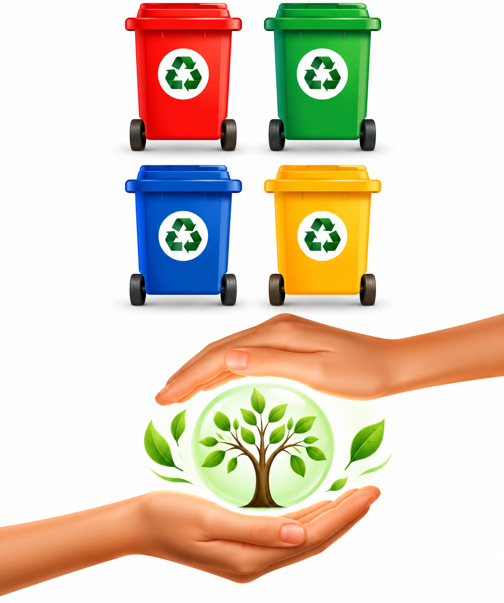

Trámites Ambientales
Gestión de trámites ante instancias federales, estatales y municipales.
Gestión ambiental, cumplimiento regulatorio y soluciones para reducir impactos y fortalecer la sostenibilidad empresarial.

SOS4 SERVICES ofrece servicios de gestión ambiental orientados al cumplimiento de requisitos aplicables y a la prevención de impactos ambientales derivados de las operaciones.
Apoyamos a las organizaciones en trámites, diagnósticos, registros, informes y programas de manejo de residuos.
Nuestro objetivo es fortalecer el desempeño ambiental mediante controles operacionales, gestión de riesgos y mejora continua.
Apoyamos a las organizaciones en diferentes procesos regulatorios y administrativos relacionados con sus obligaciones ambientales.
Gestión de trámites ante instancias federales, estatales y municipales.
Evaluación de condiciones, obligaciones y nivel de cumplimiento ambiental.
Gestión documental relacionada con la factibilidad y uso de suelo.
Gestión de constancias relacionadas con la no alteración del medio ambiente y entorno ecológico.
Apoyo en procesos de registro como empresa generadora de residuos peligrosos.
Gestión de registro como empresa generadora de residuos de manejo especial.
Apoyo documental en procesos administrativos relacionados con el registro REPSE.
Elaboración de informes correspondientes a RME y RP de acuerdo con los requerimientos aplicables.
Seguimiento de obligaciones y acciones orientadas al desempeño ambiental de la organización.
Desarrollamos programas orientados al manejo responsable de residuos dentro de las operaciones.
Identificación y separación de residuos de acuerdo con sus características.
Definición de alternativas de manejo y tratamiento según el tipo de residuo.
Seguimiento de procesos para una disposición adecuada y controlada.
Desarrollamos procesos para identificar y evaluar aspectos e impactos ambientales, permitiendo establecer controles operacionales orientados a mitigar riesgos, fortalecer el cumplimiento y mejorar el desempeño ambiental de las actividades empresariales.
La gestión ambiental requiere identificar riesgos, establecer controles y mantener un seguimiento continuo.
Reconocimiento de aspectos, impactos y obligaciones aplicables a la operación.
Determinación de riesgos, prioridades y posibles afectaciones ambientales.
Implementación de medidas y controles operacionales para prevenir impactos.
Seguimiento de resultados y establecimiento de acciones de mejora continua.
Podemos ayudarte con trámites, diagnósticos, residuos, cumplimiento y programas de gestión ambiental.